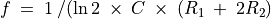
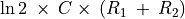

IC555 Oscillator¶
Objective
Wire an astable multivibrator circuit using IC555, measure the frequency and duty cycle of the output.


Circuit is shown in figure. The frequency is given by . The HIGH time is given by  and LOW time by .
Procedure
- Make connections
- measure frequency and duty cycle.
- Repeat by changing the value of R1
Discussion
The output waveform is shown in figure. Change the value of resistors or the capacitor, and compare the frequency and duty cycle with the calculated values.